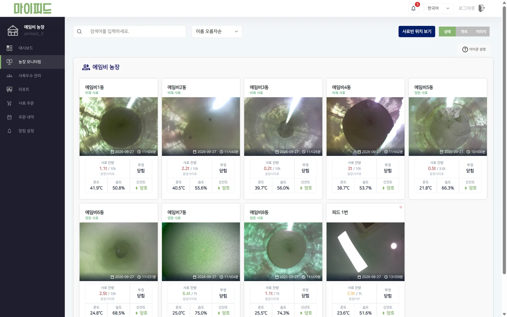
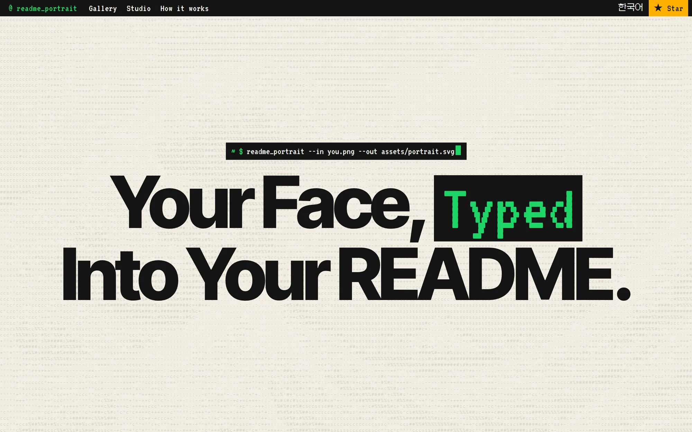

농가가 쓰는 화면을, 가볍고 읽기 쉽게.
2026년 7월 기준 130여 농가가 사용하는 마이피드에서 모니터링 화면, 관리자, 웹 알림을 만들고 고쳐 왔습니다.
- 98 → 50 모니터링 화면 요청 수 (스테이징)
- 163 → 0px 모바일 가로 넘침 (375px 폭)
- 6 → 1 알림 폴링 1회당 요청 (운영)
프론트엔드 개발자
농가에서 쓰는 사료 관리 서비스의 웹 개발과 운영. 고객 문의를 요구사항으로 정리해 화면으로 옮깁니다.

2026년 7월 기준 130여 농가가 사용하는 마이피드에서 모니터링 화면, 관리자, 웹 알림을 만들고 고쳐 왔습니다.

사진이나 GitHub 아바타를 README에 넣는 ASCII 초상 SVG로 바꾸는 오픈소스 도구입니다. 웹 스튜디오, npm CLI, GitHub Action으로 배포했습니다.
연락은 여기로 주세요.